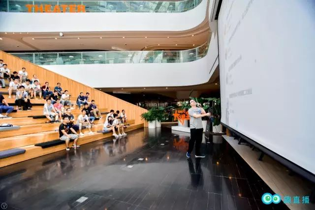

Erfahrungsbericht über die Gründung von Quzhibo (Interessantes Live-Streaming) | Original, von KI übersetzt

Vor Kurzem veranstaltete Quzhibo ein Technologie-Wachstumstreffen, bei dem der CEO von Quzhibo, Li Zhiwei, seine Erfahrungen aus der Unternehmensgründung mit uns teilte. Hier ist das Video:
Hier ist die Textversion:
Wie haben wir diese Plattform gegründet?
Was möchte Quzhibo erreichen?
Heute möchte ich mit euch teilen,
die Geschichte von Quzhibo in der Vergangenheit.

Ja, die Smartphone-Präsentationen von Smartisan sind immer besonders groß angelegt, richtig?
Damals war ich jung und unerfahren, also habe ich selbst eine Live-Streaming-Plattform aufgebaut und sie in meinem Freundeskreis beworben. Das war die erste Veröffentlichung von Qu Live.
Während des Veröffentlichungsprozesses gab es eine kleine Anekdote. Damals lautete unser Slogan „das erste Wissens-Live-Streaming-Plattform“, aber viele Leute, einschließlich mir (虾神), haben es als „die erste Plattform für sexuelles Wissen-Live-Streaming“ gelesen.
Ich denke ständig darüber nach, was ich tun soll.
Was ist der einfachste Weg zum Erfolg für mich, der nichts hat?

Ich habe lange darüber nachgedacht. Da ich Ye Gucheng, Tang Qiao und andere bekannte Persönlichkeiten kenne, könnte ich doch eine Live-Streaming-Plattform erstellen und sie einladen, um ihre Erfahrungen zu teilen?
Zuerst eine Plattform zu schaffen, die von Menschen genutzt wird, das war meine ursprüngliche Idee.
Dann machen wir eine Live-Streaming-Plattform. Die Kompilierung des Frontend- und Backend-Codes sowie die Veröffentlichung des Produkts auf der Plattform habe ich alleine durchgeführt. Viel Wissen über Frontend und Backend habe ich während der Code-Reviews in Zusammenarbeit mit Gucheng gelernt, was sich jetzt als nützlich erwiesen hat.
Wenn du in vielen Fähigkeiten gut bist, dann gibt es keine Einschränkungen für das, was du tun kannst.

Als die Plattform gerade erst gegründet wurde, gab es weder Popularität noch Streamer. Wie viele Programmierer bin ich sehr unabhängig und löse Probleme selbst. Wenn es keine Streamer gab, dann habe ich selbst gestreamt.
Später lernte ich Yilong kennen, einen ehemaligen Kollegen. Yilong kam später in die Firma als ich, und ich half ihm oft, manchmal half er auch mir, und so wurden wir allmählich gute Freunde. Gelegentlich begleitete ich Yilong zu seinen Essenseinladungen. Durch die Kontakte zu talentierten Freunden und die Teilnahme an ihren Essenseinladungen konnte ich noch mehr talentierte Menschen kennenlernen.

Die Zeit eines jeden ist begrenzt, daher sollte man sie möglichst mit herausragenden Menschen verbringen, da diese einem selbst wahrscheinlich mehr helfen können.
Später hatten wir das Glück, renommierte Experten wie Xianhua und Gucheng einzuladen, um auf unserer Plattform Live-Streams durchzuführen. Allmählich gewann die Plattform an Bekanntheit. Man wird feststellen, dass es einfacher wird, Gäste einzuladen, wenn man sich auf ein bestimmtes Gebiet spezialisiert. So konnten wir Experten aus verschiedenen Bereichen der Technologiebranche einladen, wie zum Beispiel Chen Gang, Qin Chao und Miaoshen.
Auf dem Weg der Unternehmensgründung ist die tiefste Erkenntnis, dass ich nicht mutig genug war, Dinge anzupacken.

Zum Beispiel hätte ich Leute wie Miaoshen und Qiaoge schon nach dem Yilong-Stream einladen können, da viele ihrer Freunde bereits auf unserer Plattform gestreamt haben. Aber ich hatte immer das Gefühl, dass ich noch nie mit ihnen gesprochen hatte, und hatte Angst, abgelehnt oder einfach ignoriert zu werden. Diese Angst hat mich davon abgehalten, aktiv auf sie zuzugehen, und stattdessen habe ich mich für Streamer entschieden, die nicht so einflussreich waren wie sie.
Später geriet das Unternehmen in eine Verlustphase, und als ich zum chinesischen Neujahrsfest nach Hause kam, hatte ich nur ein paar hundert Yuan bei mir, die mir mein Vater gegeben hatte. Meine Schwester beschwerte sich und sagte: “Du bist schon so erwachsen, du solltest eigentlich den Älteren und Jüngeren rote Umschläge geben. Aber du bist draußen und gründest ein Unternehmen, hast kein Geld und kannst nicht einmal rote Umschläge verteilen.”
Das war die Zeit, in der ich am traurigsten und niedergeschlagensten war. Die Enttäuschungen eines Mannes werden durch solche Dinge immer größer.
Nach meiner Rückkehr nach Peking wurde ich mutiger und begann, proaktiver verschiedene Influencer einzuladen, auf unserer Plattform Live-Streams zu machen. Es ist wichtig zu verstehen, dass die Einladung, als Streamer aufzutreten, nicht bedeutet, schlecht über sie zu reden oder sie zu verunglimpfen. Im Gegenteil, Influencer sind von Natur aus daran interessiert, ihr Wissen und ihre Erfahrungen zu teilen. Daher gibt es keinen Grund, Angst zu haben. Es ist viel besser, einfach aktiv und positiv mit ihnen in Kontakt zu treten.
Tatsächlich war es genau dieser Elan, der es uns ermöglichte, nacheinander Qiao Ge, Miao Shen und Sunny einzuladen, auf unserer Plattform Live-Streams zu veranstalten. Im selben Monat erzielte die Plattform bereits Gewinne.
Jedes Mal, wenn du dich wirklich in eine ausweglose Situation bringst, wirst du gezwungen sein, gegen deine eigenen Schwächen, gegen die Schwächen der menschlichen Natur, zu kämpfen.

Später habe ich Herrn Ye einen technischen Leiter empfohlen, der sehr kompetent war und ihm half, ein großes Problem zu lösen. Als Herr Ye sah, dass unsere Plattform profitabel war und die Wissensbezahlungsbranche vielversprechend war, investierte er in uns.
Du musst also zuerst selbst Ergebnisse vorweisen. Wenn du für andere wertvoll bist, werden sie in dich investieren. Zum Beispiel, wenn dein Jahresgehalt 2 Millionen beträgt, dann ist es relativ einfach, eine Finanzierung in Höhe von 2 Millionen zu erhalten. Schließlich liegt deine Fähigkeit klar auf der Hand.
Nachdem ich die Finanzierung erhalten habe, ist der nächste Schritt, darüber nachzudenken, wie ich das Team effektiv führen und managen kann. Dies sind die Fragen und Herausforderungen, mit denen ich mich in der nächsten Phase auseinandersetzen muss.
Das ist die Geschichte von QuZhiBo und auch meine Erfahrungen als Unternehmer.
Vielen Dank an alle!